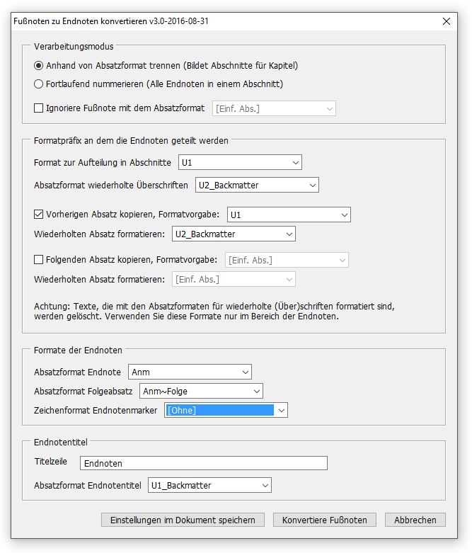
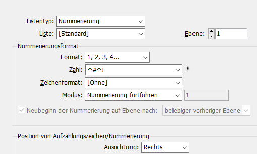

Das Erstellen und Bearbeiten erfolgt mithilfe von vier Skripten:
Voraussetzung:
Aufzählungszeichen und Nummerierung. Die Einstellungen, die dort bei Listentyp: »Nummerierung« im Feld Zahl: hinterlegt sind, werden auch auf die Endnoten angewendet.
Wählen Sie einen der beiden Verarbeitungsmodi aus:
Anhand von Absatzformaten trennen: Endnoten werden an bestimmten Absätzen wie Überschriften immer neu nummeriert. Die Überschriften werden im Endnotenapparat wiederholt.Fortlaufend nummerieren: Alle Endnoten des Titels werden durchgängig nummeriert.Die Art der Nummerierung der Endnoten wird aus den Listeneigenschaften im Absatzformat ausgelesen. So sollte es für eine Nummerierung ohne Punkt und folgendem Tabulator und einer rechtsbündigen Ausrichtung der Ziffer aussehen. Nach dem die Einstellungen im Format vorgenommen wurden, kann der Listentyp wieder auf »Ohne« gesetzt werden, der Listentyp wird aber auch bei einem Skriptdurchlauf deaktiviert.

Sollten in einem Dokument Fuß- und Endnoten vorkommen, kann die Option mit einem Haken versehen werden. Im nebenstehenden Feld kann das Format für die Fußnoten angegeben werden, die nicht zu Endnoten konvertiert werden sollen. Dafür sollten jene Fußnoten auch ein anderes Format haben.
Falls Sie beim Verabeitungsmodus Anhand von Absatzformat trennen ausgewählt haben, müssen Sie hier die entsprechenden Einstellungen vornehmen.
Format zur Aufteilung in Abschnitte: Wählen Sie hier das Absatzformat, an welchem die Endnoten jeweils neu nummeriert werden. Z.B. Kapitel- oder TeilüberschriftenAbsatzformat wiederholte Überschriften: Wählen Sie hier das Absatzformat aus, mit welcher die Abschnittsüberschrift in den Endnotenapparat kopiert wird. Achtung: Das hier ausgewählte Format darf nicht auch für normale Inhalte vergeben sein, dass Absätze mit diesem Format bei der Generierung des Endnotenapparates gelöscht werden. Arbeiten Sie gegebenfalls mit Tildenvarianten.Analog zur vorherigen Option. Denkbar für Untertitel oder Autoren.
Absatzformat Endnote: In diesem Format werden die Endnoten Formatiert. Beachten Sie die Listennummerierungseinstellungen in dem Format.Absatzformat Folgeabsatz: Bestehen die Fuß/Endnoten aus mehren Absätzen, wählen Sie hier das Format für die Folgeabätze ohne Nummerierung.Zeichenformat Endnotenmarker: Wenn Sie hier ein Zeichenformat auswählen, wird das Endnotenzeichen im Haupttextfluss mit diesem Format ausgezeichnet.Titelzeile: Geben Sie hier den Text für die Überschrift Ihres Endnotenapparates einAbsatzformat Endnotentitel: Wählen Sie das Format für die Endnotenüberschrift aus. Das Format darf nicht für andere Überschriften vewrwendet werden, weil anhand des Formatnamens der Endnotenapparat lokalisiert wird. Das ist für das spätere Hinzufügen von Endnote wichtig.Das Skript funktioniert im Haupttext oder im Endnotenapparat, die bezeichnete Endnote wird gelöscht. Die folgenden Endnoten innerhalb des Textrahmens werden neu nummeriert.
Folgende Möglichkeiten gibt es:
Mit dem Start des Skriptes springt der Cursor zur entsprechenden Endnote im Endnotenapparat bzw. nach zum Endnotenmarker in den Haupttext. Das Skript prüft zusätzlich noch alle Endnoten auf Integrität, also gelöschte Maker oder Endnoten, deswegen dauert die Benutzung des Skriptes länger, als wenn Sie die Hyperlink-Palette nutzen.
| Achtung: |
| Nach Anwendung dieses Skriptes können keine Endnoten mehr nachträglich gelöscht oder eingefügt werden! Dieses Skript sollte nur verwendet werden, bevor das E-PDF erstellt wird. Machen Sie sich vorher eine Sicherungskopie, auf der Sie später weiterarbeiten! |
Dieses Skript wandelt den dynamischen Endnotenapparat in eine harte Liste um und verlinkt die Ziffer der Liste mit der Endnotenziffer im Text. Mithilfe dieses Backlinks können PDFs generiert werden, in denen eine beidseitige Verlinkung funktioniert. Hier können Sie nichts einstellen. Es wird auch automatisch eine eigene Version des Dokumentes erstellt.